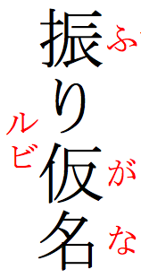
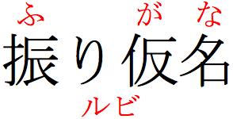
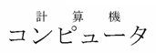
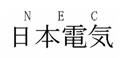
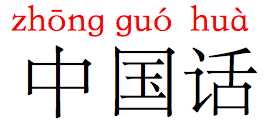
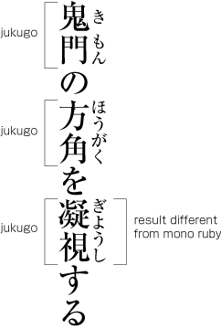
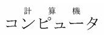
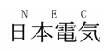
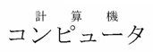
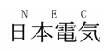

Ruby is a name for small annotations that are rendered alongside base text. This is especially useful for Japanese and other East Asian
content (ruby may be called furigana in Japanese).
The HTML specification provides a way to mark up ruby text, and
CSS can be used to fine tune the positioning of ruby text.
The name ruby originated from a named font size (about half the size of the normal 10
point font) used by British typesetters.
Typically ruby is used in East Asian scripts to provide phonetic transcriptions of obscure and little known characters, characters that the reader is
not expected to be familiar with (such as children or foreigners learning to write), or characters that have multiple readings which can't be determined by the context (eg. some Japanese names). For example it is widely used in educational materials and children’s texts.
It is also occasionally used to convey
information about the meaning of ideographic characters.
In Japanese, where ruby is often called furigana, phonetic transcriptions typically appear in hiragana characters above
horizontal text and to the right of vertical text.
On the rare occasions that it is used to express
semantic information, Japanese ruby often appears below horizontal text, and to the left of vertical text.
As can be seen in the following example, it is possible to combine both phonetic and semantic ruby for the same run of base text.


A vertical and a horizontal example of ruby in Japanese.
Ruby text in these examples is colored red only to direct your attention to it – ruby annotations would normally be the same color as the base text.
Although ruby in Japanese is often written in hiragana, you will occasionally find
annotations in kanji, katakana (particularly in Japanese 'manga' comics) and Latin text.


Examples of ruby annotations using katakana, kanji, and latin characters.
In Mainland China, Simplified Chinese characters are typically annotated with pinyin transliterations above or below each character.

Pinyin ruby for Simplified Chinese base text.
Ruby annotations in Traditional Chinese commonly use bopomofo characters to indicate pronunciation. Rather than the annotation appearing above the main text, it is included vertically to the right of each character, whether the main text flows
vertically or horizontally.
Note, especially, how the tone marks in the example appear to the right of the column of alphabetic bopomofo characters, even though they are not combining characters.
Mono ruby is commonly used for phonetic annotation of text.
In mono ruby the ruby text is positioned alongside a single base character. There is typically no overlap across adjacent base characters, although that and other positional aspects can be tailored using styling. Note how, in the figure below, a single character annotation is typically centred over its base character, leaving a small gap either side of the annotation, and how a three-character annotation forces the base character away from its neighbour to avoid overlapping.
Mono ruby in Japanese.
You can break a word that uses mono ruby at any point, and the ruby text stays with its base character.
Group ruby is used where phonetic annotations don’t map to discreet base characters, or for semantic glosses that span the whole base text. The figure below shows an example of a Japanese word for which each individual base character has no independent pronunciation. The annotation applies to both base characters as a single unit.
Group ruby in Japanese.
You can’t split text that is annotated with group ruby. It has to wrap as a single unit onto the next line.
Jukugo refers to a Japanese compound noun, ie. a word made up of more than one kanji character, such as 調理師 (chef).
Jukugo ruby is a term that is used to describe ruby annotations that sometimes behave like group ruby, and sometimes like mono ruby. It is worth describing it in a little detail, since people often find it confusing.
Jukugo ruby behaves like mono ruby, in that there is a strong association between ruby text and individual base characters. This becomes clear when you split a word at the end of a line: you’ll see that the ruby text is split so that the ruby annotating a specific base character stays with that character. What’s different about jukugo ruby is that when the word is not split at the end of the line, there can be some significant amount of overlap of ruby text with adjacent base characters.

Distribution of ruby annotations for jukugo.
The image to the right shows three examples of ruby annotating jukugo words.
In the top two examples, the effect is the same as mono ruby, since neither of the base characters are overlapped by ruby text that doesn’t relate to that character.
The third example is where we see the difference that characterises jukugo ruby. The first three ruby characters are associated with the first kanji character. Just the last ruby character is associated with the second kanji character. And yet the ruby text has been arranged evenly across both kanji characters.
Note, however, (and this is an important distinction!) that we aren’t simply spreading the ruby over the whole word, as we would with group ruby. There are rules that apply, and in some cases gaps will appear. See the following examples of distribution of ruby text over jukugo words.
Distribution of annotations for jukugo, showing gaps in some places.
Also note that if the third word is split at the end of a line, so that the second kanji character moves to the next line, only the last hiragana character will move with it, and the annotations will once again look like mono ruby.
 


